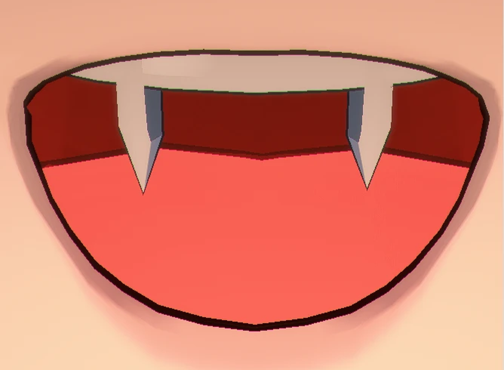
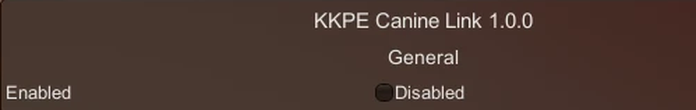
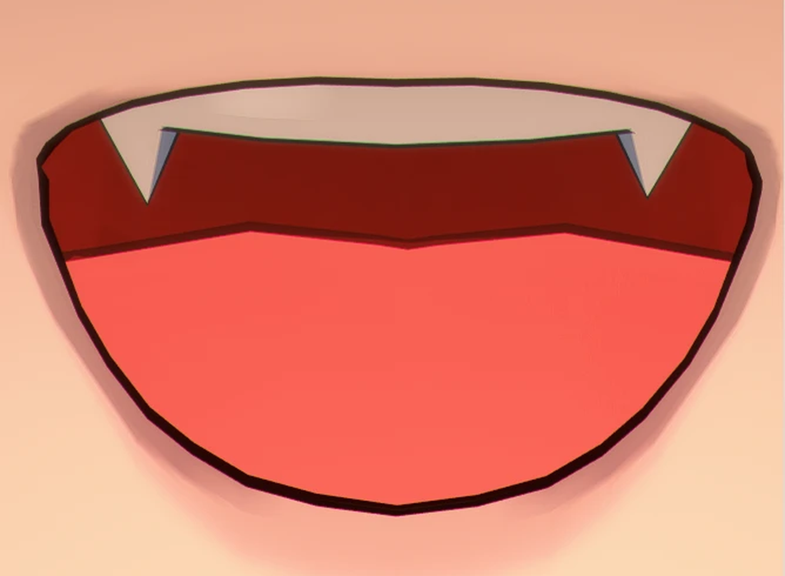
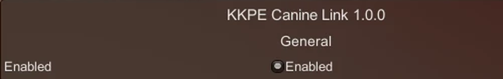

KKPE overrides each mouth mesh separately, and its link option only covers the eyes.
KKPE 分開覆寫每個嘴部網格，連動選項只涵蓋眼部。
While Teeth is overridden, it copies the teeth weights onto the fangs every frame.
Teeth 被覆寫時，每幀把牙齒的權重複製給八重齒。
No new keyframes. Nothing saved in your scene. A manual Canines edit always wins.
不用補關鍵影格，也不寫入場景。手動調整 Canines 時以你的設定為準。